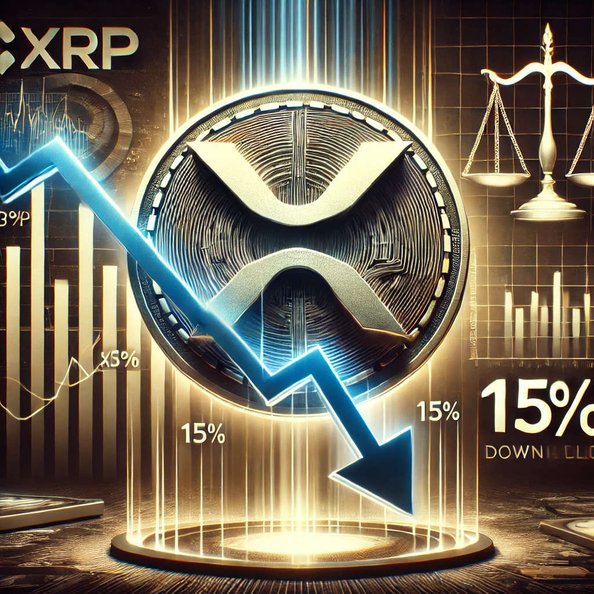

O mercado de criptomoedas está apresentando alguns movimentos interessantes em setembro de 2024. O Bitcoin, que recentemente encontrou suporte na faixa de US$ 57 mil, tem projeções otimistas para curto prazo, com alvos entre US$ 63 mil e US$ 64 mil. Contudo, é importante monitorar o suporte em US$ 55.500, pois uma queda abaixo desse nível pode levar o preço a US$ 52.600 ou até US$ 50 mil. Esse cenário aponta uma oportunidade de compra para os investidores no curto prazo, de acordo com especialistas do mercado
Além disso, o mercado de criptomoedas está se preparando para o próximo halving do Bitcoin, que deve ocorrer em abril de 2024. Esse evento reduzirá pela metade a recompensa por bloco minerado, tornando o Bitcoin ainda mais raro e potencialmente valorizando o ativo. Analistas acreditam que, seguindo tendências anteriores, o BTC pode ultrapassar seu recorde de US$ 69 mil(
CryptoNews Brasil
).
Para mais informações e atualizações detalhadas sobre o mercado, você pode conferir as fontes
"Bitcoin Atinge Novo Recorde"
Bitcoin ultrapassa $70.000, marcando um novo recorde histórico, impulsionado pela adoção institucional e aprovação de ETFs. O ativo continua a ser uma reserva de valor atrativa e um importante marco nas finanças digitais.
Saiba mais
"Ethereum Em Alta"
Ethereum atinge nova máxima graças ao crescimento do DeFi e melhorias na rede. A plataforma se consolida como a principal escolha para contratos inteligentes e aplicações financeiras descentralizadas.
Saiba mais

"XRP Cai 15% em 3 Dias Após Retrocesso Legal da Ripple"
O preço do XRP despencou 15% em três dias, após um revés legal significativo para a Ripple. A empresa enfrenta dificuldades com a SEC, o que colocou pressão sobre o mercado. No entanto, analistas sugerem que esse pode ser o fundo antes de uma nova alta.
Saiba mais